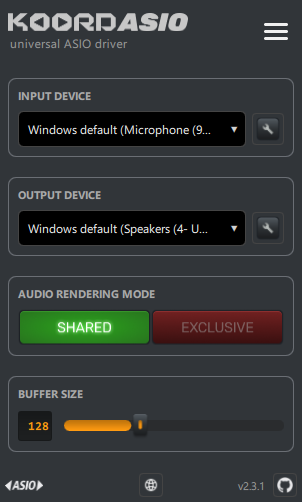

universal ASIO driver
Low-latency ASIO audio on Windows for interfaces that never shipped a decent driver of their own — and for the ones that did, but left out what you needed. Works with 32-bit and 64-bit hosts alike. Free and open source.
64-bit Windows installer, digitally signed · all releases and changelog

KoordASIO Control — everything the driver needs, on one screen.
It isn't tied to specific hardware. If Windows can play through it, KoordASIO can present it to your ASIO host.
Both drivers are installed and registered. Older 32-bit versions of Ableton Live or Reaper, and 32-bit plugin bridges, find KoordASIO just as 64-bit hosts do — there is no build to choose.
WASAPI Exclusive Mode with buffers down to 32 samples, going straight to the device and bypassing the Windows mixer.
Pick your devices, pick a mode, move the slider. Changes are saved the moment you make them.
Exclusive Mode locks the device to one application. Switch to Shared Mode to keep a browser or video call running alongside.
Present a mono input or output as stereo for hosts that insist on two channels.
A derivative of FlexASIO focused on WASAPI and getting out of your way. Auditable, and free forever.
Out of the box you get WASAPI Exclusive Mode, your Windows default recording and playback devices, and a 32-sample buffer. If Exclusive Mode stops other applications from using the same device, switch to Shared Mode in the control panel.
| Operating system | Windows Vista or later, 64-bit |
|---|---|
| Host applications | Any ASIO host, 32-bit or 64-bit — Ableton Live, Reaper, Cubase, Jamulus, and others |
| Audio backend | Windows WASAPI, Shared or Exclusive Mode |
| Buffer sizes | 32 to 2048 samples |
| Sample format | 32-bit float |
| Settings file | .KoordASIO.toml in your user folder |
| Licence | Open source — see the repository |
Something not working? Open an issue on the issue tracker — include your interface, your host application, and what you were doing.
For deeper reading: FAQ, audio backends (what Shared and Exclusive Mode really do), and the full configuration reference for the settings the control panel doesn't expose.